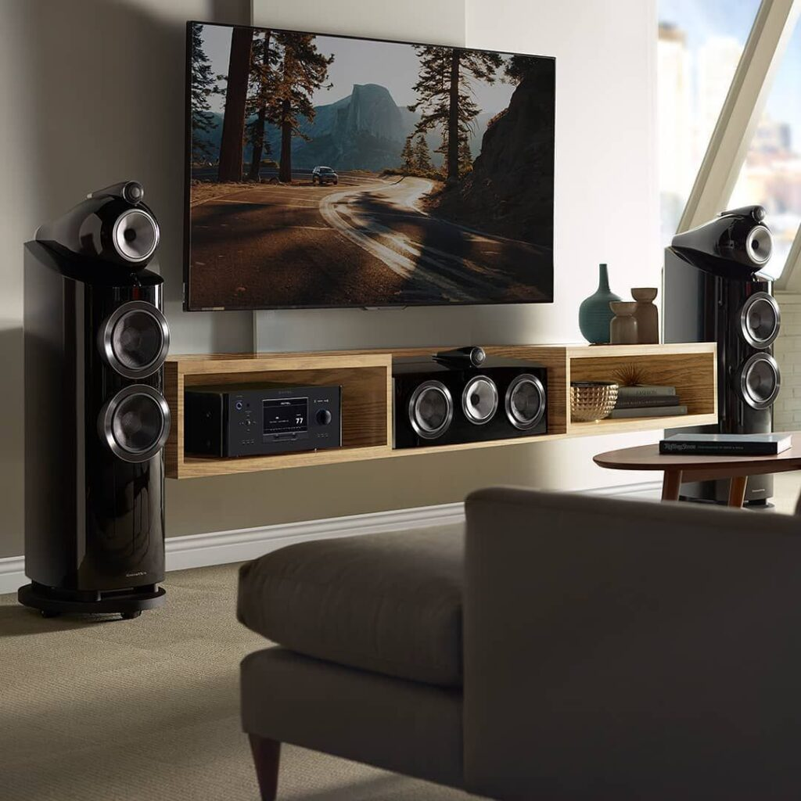
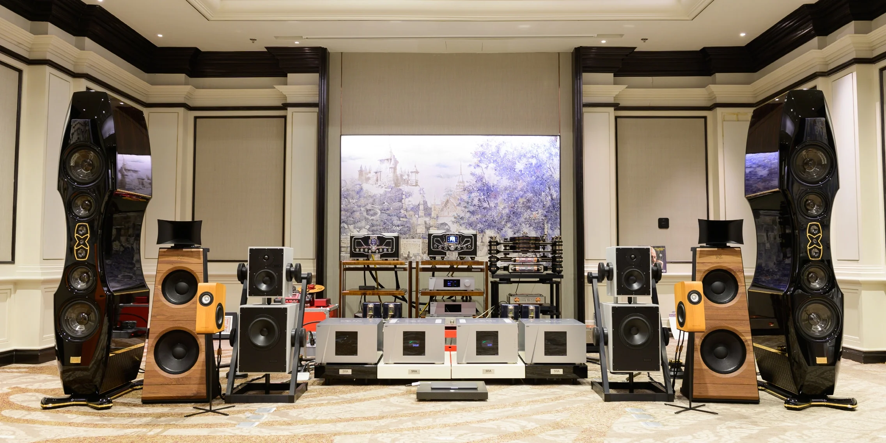
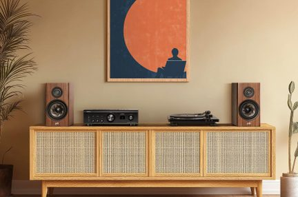

O que é o Hi-Fi?
Hi-Fi é a abreviação de High Fidelity, expressão em inglês que significa “alta fidelidade”. No universo do áudio, esse termo é usado para descrever equipamentos e sistemas capazes de reproduzir músicas e sons da forma mais fiel possível à gravação original. O objetivo do Hi-Fi é oferecer uma experiência sonora rica em detalhes, equilíbrio e clareza, permitindo que o ouvinte perceba nuances que normalmente passam despercebidas em equipamentos comuns.


Além da qualidade da gravação, a experiência Hi-Fi também depende do ambiente e dos equipamentos utilizados. Salas com tratamento acústico ajudam a reduzir distorções e melhorar a clareza do som, enquanto caixas de som, amplificadores, DACs e fones de qualidade garantem uma reprodução mais fiel e imersiva. Cada componente influencia diretamente no resultado final. Para conhecer melhor esses aparelhos e suas funções, acesse a página de Equipamentos.
Como começar?
A melhor maneira de começar no universo Hi-Fi é focar primeiro na experiência de escuta, e não apenas em equipamentos caros. Para quem está começando, o ideal é montar um sistema simples e equilibrado. Ouvir músicas que você já conhece bem é essencial para perceber diferenças de qualidade e desenvolver seu próprio gosto sonoro. Mais importante do que buscar “o melhor equipamento” é descobrir o tipo de som que mais agrada você, aproveitando o processo de aprendizado e explorando o Hi-Fi de forma gradual e divertida.
